2 Gráficos avanzados
Esta sección es una introducción a las ideas del libro The Grammar of Graphics de Leland Wilkinson (2005) tal y como vienen implementadas en el paquete ggplot2 de Hadley Wickham (2009).
 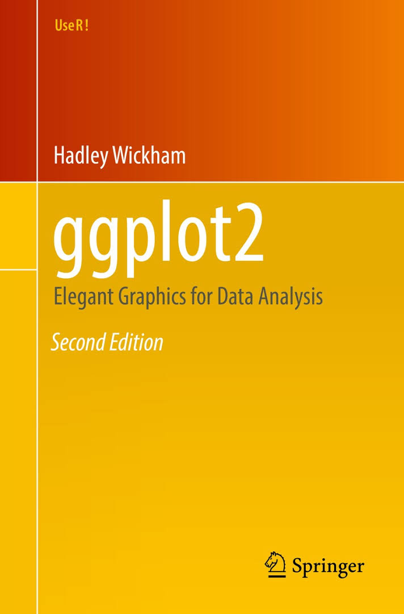
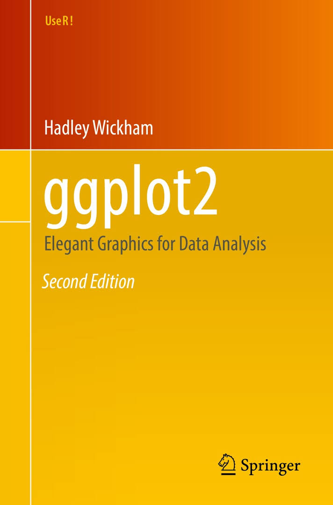
A continuación veremos los elementos principales de esta gramática y como nos permiten elaborar de manera sencilla representaciones visuales del comportamiento de una variable de interés a través de los distintos niveles de otras.
El gráfico siguiente muestra la evolución de la tasa de mortalidad por cáncer según la localización, en España durante el periodo 1975-2012.
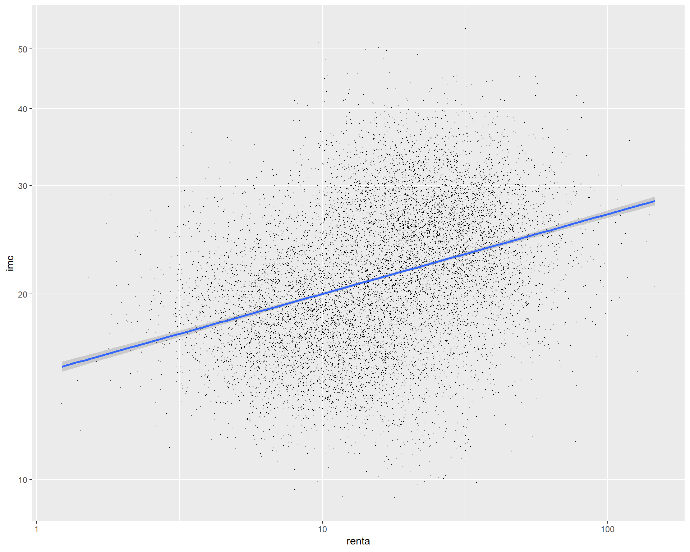
2.1 Elementos de un gráfico
El gráfico anterior, se obtuvo de la siguiente manera. En primer lugar, se carga los datos de mortalidad:
require(data.table)
load("data/cancer.RDA") #carga los datos
cancer## sexo periodo tumor tasa
## 1: Hombres 1975 C.BUCAL Y FARINGE 5.541879
## 2: Hombres 1976 C.BUCAL Y FARINGE 5.512168
## 3: Hombres 1977 C.BUCAL Y FARINGE 5.827874
## 4: Hombres 1978 C.BUCAL Y FARINGE 5.323451
## 5: Hombres 1979 C.BUCAL Y FARINGE 5.461059
## ---
## 3188: Mujeres 2008 TODOS MUERTOS 385.294977
## 3189: Mujeres 2009 TODOS MUERTOS 373.009470
## 3190: Mujeres 2010 TODOS MUERTOS 359.444478
## 3191: Mujeres 2011 TODOS MUERTOS 357.461639
## 3192: Mujeres 2012 TODOS MUERTOS 359.691700La expresión de ggplot2 para crear el gráfico fue:
ggplot(cancer) +
aes(x = periodo, y = tasa, col = sexo) +
geom_line(size=1) + scale_y_log10() +
facet_wrap( ~ tumor) Esta expresión combina varios elementos que discutiremos en detalle a continuación:
- Datos: siempre un “data.frame”
- Estéticas: elementos representables gráficamente (la posición
xey, el color, la forma, …) en columnas del data.frame. - Geometrías (o capas): puntos, rectas, histogramas, densidades, etc. También se llaman capas porque pueden superponerse.
- Facetas: parten un gráfico en sublienzos preservando las escalas (pequeños múltiplos)
2.1.1 Datos
Uno de los elementos más importantes de un gráfico son los datos que se quieren representar. Una particularidad de ggplot2 es que solo acepta un tipo de datos: un data.frame.
Por otro lado, es preferible que los datos estén en un formato “largo” (long format), es decir, una columna para cada dimensión y una fila para cada observación.
Para ilustrar esta idea, se considera la base de datos VADeaths que proporciona tasas de mortalidad (por 1000 personas/año) en Virginia (1940) por grupos socio-demográficos y de edad.
| Rural Male | Rural Female | Urban Male | Urban Female | |
|---|---|---|---|---|
| 50-54 | 11.7 | 8.7 | 15.4 | 8.4 |
| 55-59 | 18.1 | 11.7 | 24.3 | 13.6 |
| 60-64 | 26.9 | 20.3 | 37.0 | 19.3 |
| 65-69 | 41.0 | 30.9 | 54.6 | 35.1 |
| 70-74 | 66.0 | 54.3 | 71.1 | 50.0 |
Antes de representar los datos, convertimos la base en un formato alargado.
require(data.table)
temp=as.data.table(VADeaths,keep.rownames=TRUE)
mortalidad=melt(temp,id.vars="rn") #formato alargado
names(mortalidad) <- c("edad","grupo","tasa")
mortalidad## edad grupo tasa
## 1: 50-54 Rural Male 11.7
## 2: 55-59 Rural Male 18.1
## 3: 60-64 Rural Male 26.9
## 4: 65-69 Rural Male 41.0
## 5: 70-74 Rural Male 66.0
## 6: 50-54 Rural Female 8.7
## 7: 55-59 Rural Female 11.7
## 8: 60-64 Rural Female 20.3
## 9: 65-69 Rural Female 30.9
## 10: 70-74 Rural Female 54.3
## 11: 50-54 Urban Male 15.4
## 12: 55-59 Urban Male 24.3
## 13: 60-64 Urban Male 37.0
## 14: 65-69 Urban Male 54.6
## 15: 70-74 Urban Male 71.1
## 16: 50-54 Urban Female 8.4
## 17: 55-59 Urban Female 13.6
## 18: 60-64 Urban Female 19.3
## 19: 65-69 Urban Female 35.1
## 20: 70-74 Urban Female 50.0p <- ggplot(mortalidad)El código anterior crea un objeto, p que viene a ser un proto-gráfico: contiene los datos que vamos a utilizar, los del conjunto de datos mortalidad. Obviamente, el código anterior es insuficiente para crear un gráfico: aún no hemos indicado qué queremos hacer con mortalidad.
2.1.2 Estéticas (aes)
En un conjunto de datos hay columnas: edad, altura, ingresos, temperatura, etc. En un gráfico hay, en la terminología de ggplot2, aesthetic. Estéticas son, por ejemplo, la distancia horizontal o vertical, el color, la forma (de un punto), el tamaño (de un punto o el grosor de una línea), etc.
p <- p + aes(x = edad, y = tasa, colour = grupo)se están añadiendo a p información sobre las estéticas que tiene que utilizar y qué variables de mortalidad tiene que utilizar:
- La abscisa
x, vendrá dada por el grupo de edad. - La ordenada
y, por la tasa de mortalidad. - El color, por el grupo socio-demográfico.
Al protográfico se le han sumado las estéticas. En las secciones siguientes se le sumarán otros elementos adicionales. Lo importante es recordar cómo la suma es el signo que combina los elementos que componen el lenguaje de los gráficos.
De todos modos, es habitual combinar ambos pasos en una única expresión
p <- ggplot(mortalidad, aes(x = edad, y = tasa, colour = grupo))El objeto p resultante aún no es un gráfico ni se puede representar. Le faltan capas, que es el objeto de la siguiente sección. No obstante, se puede inspeccionar la relación (o mapeo) entre estéticas y columnas de los datos:
p$mapping## Aesthetic mapping:
## * `x` -> `edad`
## * `y` -> `tasa`
## * `colour` -> `grupo`¿Cuántas estéticas existen? Alrededor de una docena, aunque se utilizan, generalmente, menos:
xey, coordenadas horizontal y vertical.colour, para el color.size, para el tamaño.shape, que indica la forma de los puntos (cuadrados, triángulos, etc.) de los puntos o del trazo (continuo, punteado) de las líneas.alphapara la transparencia: los valores más altos tendrían formas opacas y los más bajos, casi transparentes. También muy útil para el solapamiento de puntos.fill, para el color de relleno de las formas sólidas (barras, etc.).
Hay que advertir que NO todas las estéticas tienen la misma potencia en un gráfico. El ojo humano percibe fácilmente longitudes distintas. Pero tiene problemas para comparar áreas (que es lo que regula la estética size) o intensidades de color. Se recomienda usar las estéticas más potentes para representar las variables más importantes.
2.1.3 Capas (geoms)
Las capas (o geoms para ggplot2) son los verbos del lenguaje de los gráficos. Indican qué hacer con los datos y las estéticas elegidas, cómo representarlos en un lienzo:
p <- p + geom_point()
p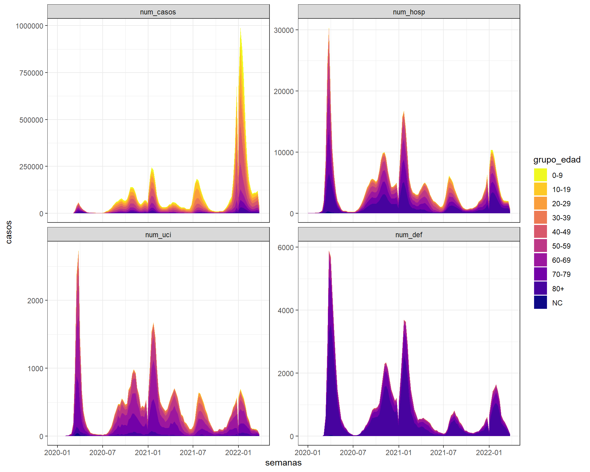
Una vez añadida una capa al gráfico, este puede pintarse (que es lo que ocurre al llamar a p). Se obtiene el mismo resultado haciendo, en una única línea,
ggplot(mortalidad, aes(x = edad, y = tasa, colour = grupo)) + geom_point()Una característica de las capas, y de ahí su nombre, es que pueden superponerse. Por ejemplo,
ggplot(mortalidad, aes(x = edad, y = tasa, colour = grupo, group= grupo)) +
geom_point() + geom_line()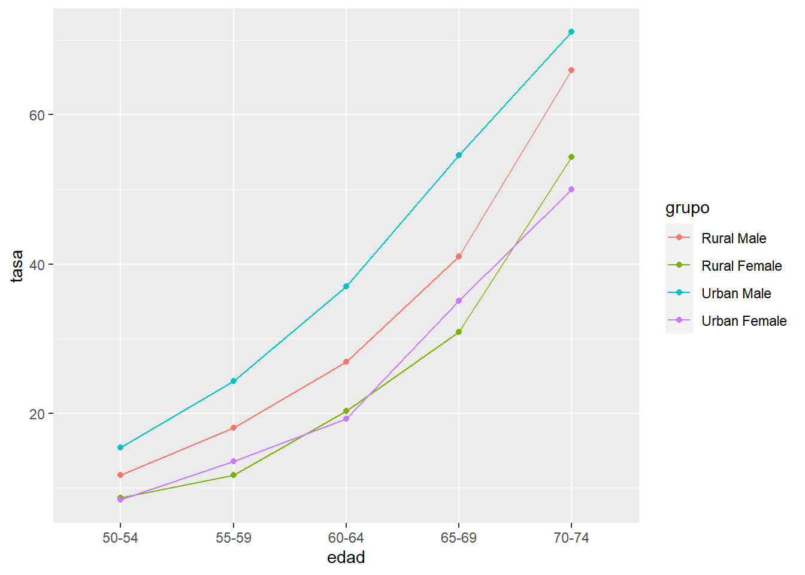
# Se requiere la estética `group` para conectar los puntos de una linea cuando la variable en abscisa es un factor.Existen muchos tipos de capas. Los más usuales son geom_point, geom_line, geom_histogram, geom_bar y geom_boxplot (ver las página https://ggplot2.tidyverse.org/reference/) para una lista actualizada.
Abajo una representación mediante un diagrama de barra de los datos anteriores:
ggplot(mortalidad, aes(x = edad, y = tasa, fill = grupo)) +
geom_bar(stat="identity",position="dodge")
Elaborar el siguientes gráfico sobre la evolución del paro en España. Utilizar la capa geom_smooth para suavizar la tendencia y la estética linetype para distintos tipos de curvas.
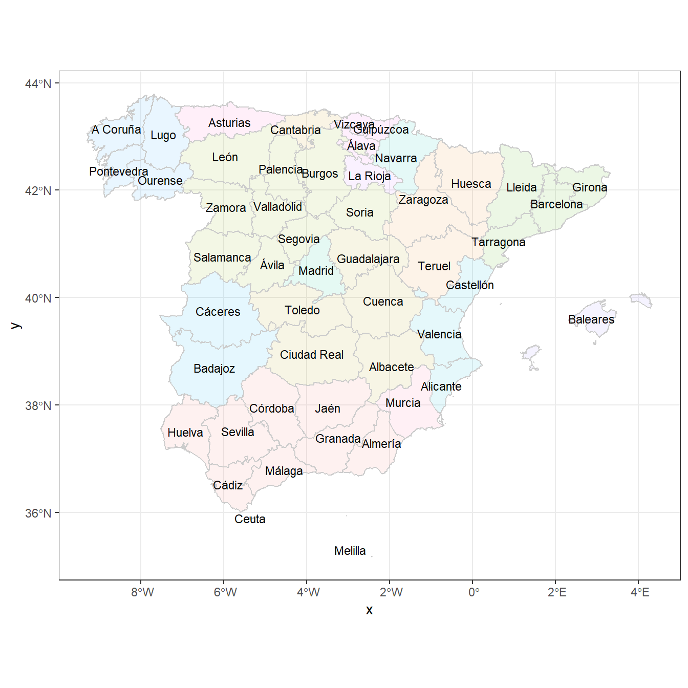
Elaborar un gráfico sobre la evolución del número de hospitalización por COVID en España. Se podría utilizar la capa geom_area y la estética fill para distinguir mejor los distintos grupos de edad.
2.1.4 Facetas
Las facetas permiten subdividir un gráfico y suele ser un recurso muy eficiente para describir el comportamiento de una variable en función de otra variable categórica. Así por ejemplo, con los datos de mortalidad,
ggplot(mortalidad, aes(x = edad, y = tasa)) +
geom_bar(stat="identity") +
facet_grid(~grupo)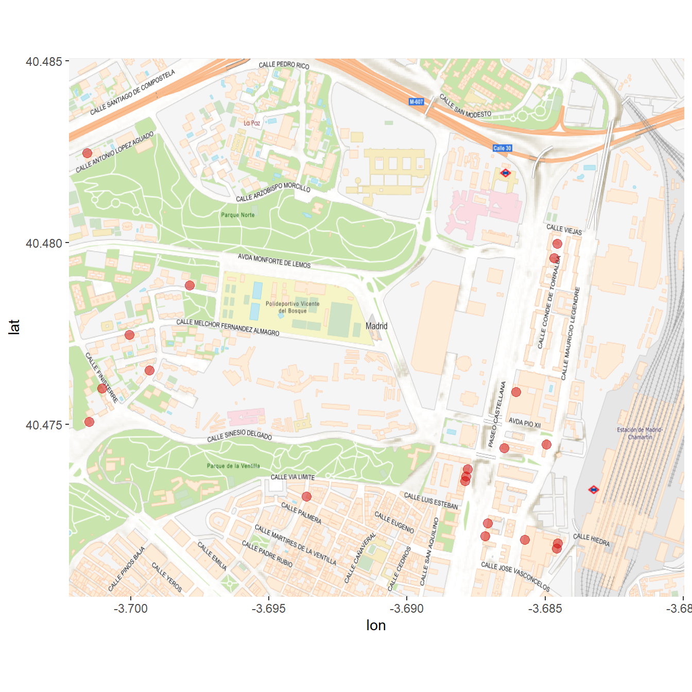
crea tres gráficos dispuestos horizontalmente que comparan la relación entre la anchura y la longitud del pétalo de las tres especies de iris. Una característica de estos gráficos, que es crítica para poder hacer comparaciones adecuadas, es que comparten ejes.
Los gráficos podrían disponerse verticalmente reemplazando facet_grid(~grupo) por facet_grid(grupo~) en el código anterior. Además, se puede subdividir el lienzo por dos (¡o más!) variables así:
mortalidad[,c("zone", "sex"):= tstrsplit(grupo, " ")]
ggplot(mortalidad, aes(x = edad, y = tasa)) +
geom_bar(stat="identity") +
facet_grid(zone ~ sex)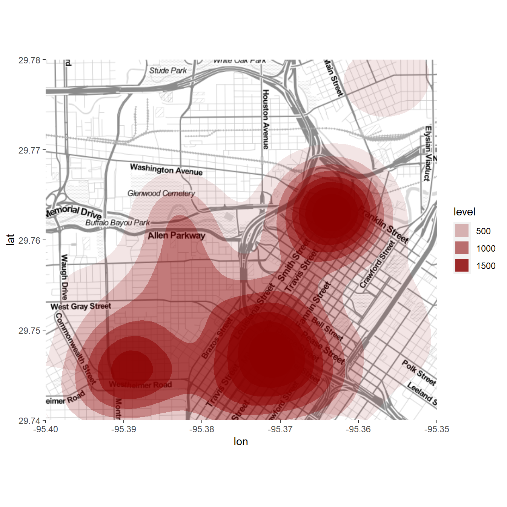
Elaborar los siguientes gráficos sobre la evolución del paro. Para el segundo gráfico, se puede filtrar la base original con el comando:
paro.ZHT <- subset(paro,Provincia %in% c(‘Zaragoza’, ‘Huesca’, ‘Teruel’))
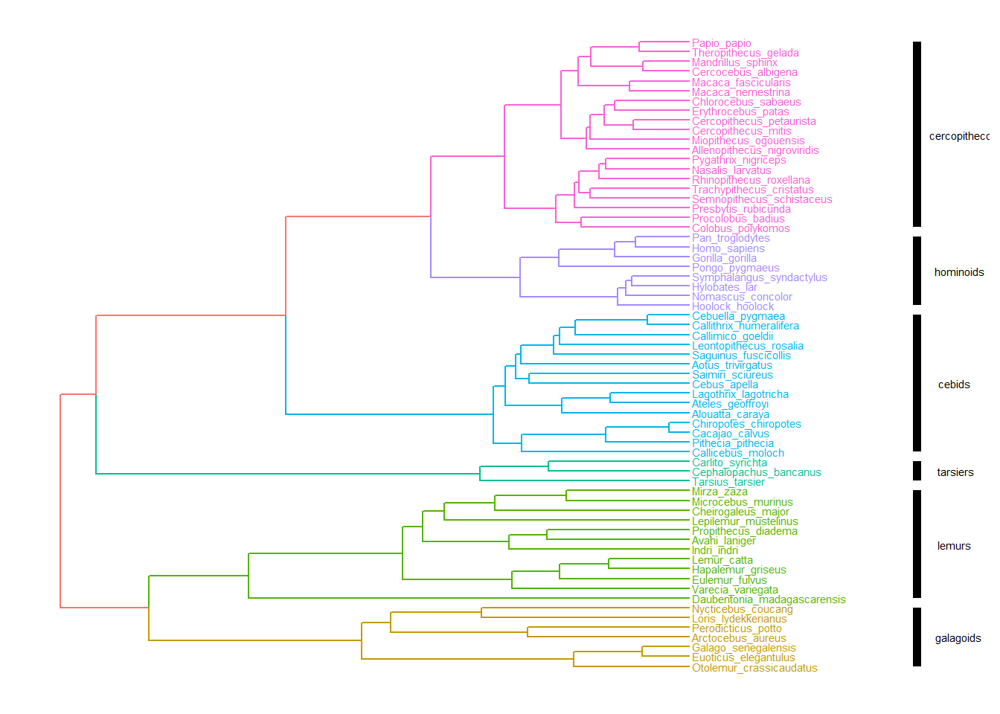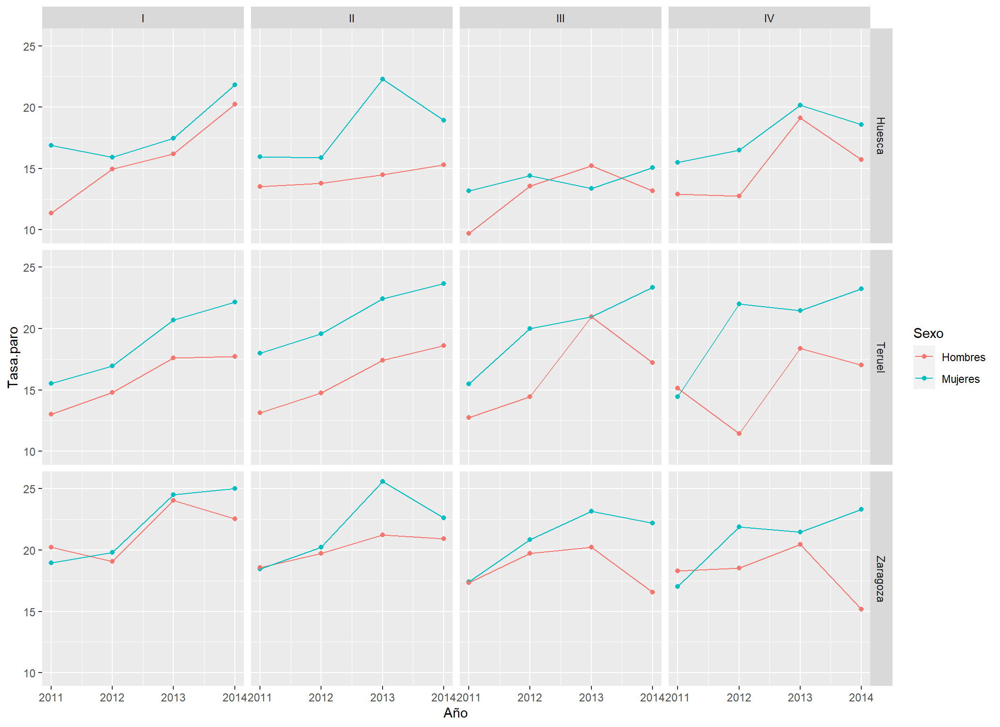
En caso de haber muchas categorías (p.e., todas las provincias), puede usarse la función facet_wrap para distribuir las subgráficas en una cuadrícula (ver gráfico a principio de la sección).
Utilizando las facetas, describir en un único gráfico la evolución del COVID en España de acuerdo a las distintas variables contenidas en la correspondiente base de datos.
2.1.5 Toque final
2.1.5.1 Etiquetas
Las estéticas se pueden etiquetar con la función labs. Además, se le puede añadir un título al gráfico usando la función ggtitle. Por ejemplo, en el gráfico anterior se pueden re-etiquetar los ejes y la leyenda escribiendo
obesidad<-fread("data/obesidad.csv")
p<-ggplot(obesidad,aes(x=renta,y=imc,color=region))+geom_smooth(method="lm")
p + ggtitle("Relación entre Indice de Masa Corporal (IMC) y renta") +
labs(x = "Renta (en miles de dolares por año)", y = quote(IMC (kg/m)), color = "Continente")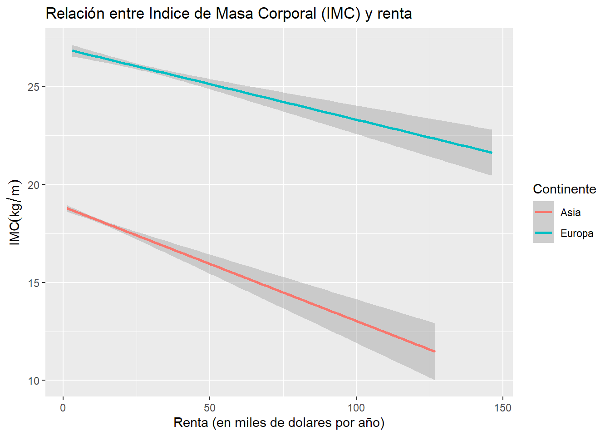
2.1.5.2 Escalas
Las escalas de las estéticas pueden ser modificadas para mejorar la claridad del gráfico.
p<-ggplot(obesidad,aes(x=renta,y=imc))+geom_point(size=.1)+geom_smooth(method="lm")
p 
p+scale_x_log10()+scale_y_continuous(breaks=seq(10,50,10),trans="log")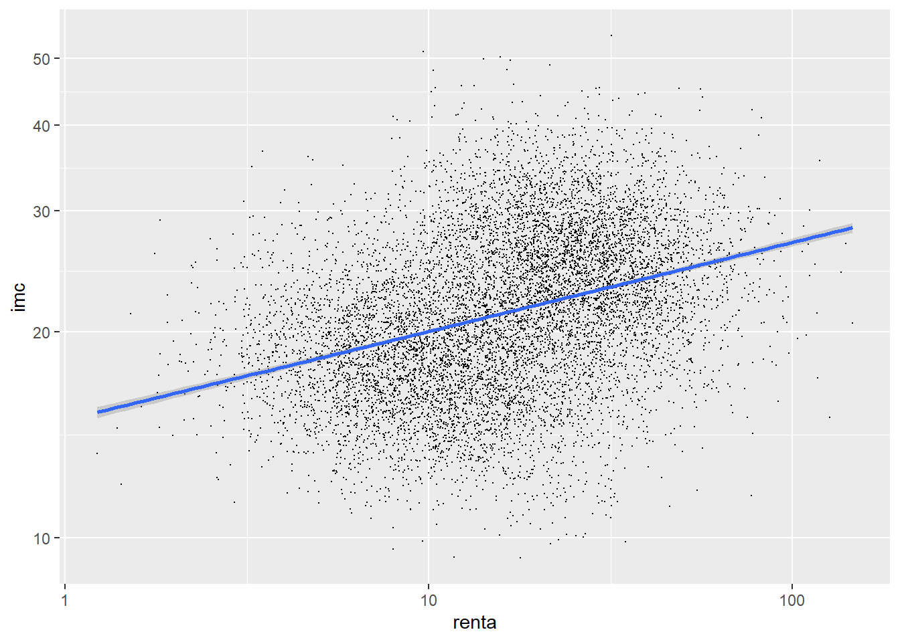
ggplot(obesidad,aes(x=renta,y=imc,color=region))+geom_smooth(method="lm") +
geom_point(size=.1,alpha=.1)+
scale_x_log10()+scale_y_continuous(breaks=seq(10,50,10),trans="log")+
scale_color_manual("Continente",values=c("green4","red4"),limits=c("Europa","Asia"))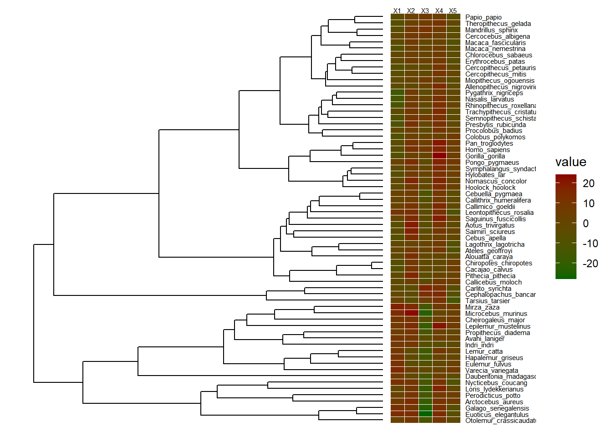
2.1.5.3 Temas
Los temas de ggplot2 permiten modificar aspectos estéticos del gráfico que no tienen que ver con los datos en sí. Eso incluye los ejes, etiquetas, colores de fondo, el tamaño de los márgenes, etc. Cambiar el tema por defecto, puede ser útil cuando los gráficos tienen que adecuarse a una imagen corporativa o atenerse a algún criterio de publicación.
El tema que usa ggplot2 por defecto es theme_grey. Al escribir theme_grey() en la consola de R, se muestran alrededor de cuarenta elementos modificables y sus atributos tal y como los define dicho tema.
¿Qué se puede hacer con los temas? Una primera opción es elegir otro. Por ejemplo, se puede reemplazar el habitual por otros disponibles en el paquete como theme_bw (o theme_classic) haciendo
p + facet_grid(~region) + theme_bw()
p + facet_grid(~region) + theme_classic()Es posible usar tanto los temas que incluye ggplot2 por defecto como otros creados por la comunidad. Algunos, por ejemplo, tratan de imitar el estilo de publicaciones reconocidas como The Economist o similares. Algunos están recogidos en paquetes como, por ejemplo, ggthemes.
2.1.5.4 Exportación de los graficos
Una vez creado un gráfico, es posible exportarlo en diversos formatos:
- Imagen tipo bitmap (
jpeg,png,bmp,tiff,…) - Imagen vectorial (
pdf,svg,…)
La función ggsave guarda en un fichero el último gráfico generado con ggplot2. Lo hace, además, en el formato indicado en el nombre del fichero que se quiere generar. Así,
ggplot(obesidad,aes(x=renta,y=imc,color=region))+geom_smooth(method="lm")
ggsave("obesidad.pdf")
#ggsave("mortalidad.pdf", width = 20, height = 20, units = "cm")
ggsave("obesidad.png")Si no se especifica ruta, las imágenes serán guardadas en el directorio de trabajo.
Las imágenes vectoriales tienen una resolución “infinita” y suelen ocupar poca memoria. Sin embargo, no todos los editores de texto admiten este tipo de formato.
A partir de los datos de temperaturas anuales en Lisboa de 1880 a 2008 (base de datos temp_lisboa.csv), crear y exportar el siguiente gráfico, utilizando la capa geom_tile, el tema vacio theme_void() y la paleta de colores “RdBu” (scale_fill_distiller(palette = ‘RdBu’)).
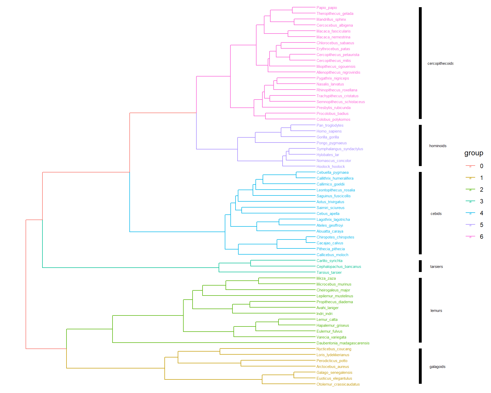
2.2 Mapas
Con
ggplot2se puede también construir representaciones gráficas con información geográfica (puntos, segmentos, etc.): basta con que las estéticasxeyse correspondan con la longitud y la latitud de los datos.Lo que permite hacer el paquete
ggmapes, en esencia, añadir a una representación grafica de datos georeferenciados una capa cartográfica adicional. Para eso usa recursos disponibles en la web a través de APIs (de Google y otros).
Un ejemplo sencillo ilustra los usos de ggmap. En primer lugar, se carga (si se ha instalado previamente) el paquete:
library(ggmap)Existen varios proveedores que proporcionan APIs de geolocalización. Uno de ellos es Google: dado el nombre más o menos normalizado de un lugar, la API de Google devuelve sus coordenadas. Este servicio tiene una versión gratuita que permite realizar un determinado número de consultas diarias (2500 actualmente); para usos más intensivos, es necesario adquirir una licencia.
La función geocode encapsula la consulta a dicha API y devuelve un objeto (un data.frame) que contiene las coordenadas del lugar de interés:
#cne<- geocode('Calle Monforte de Lemos 5, madrid') #sólo funciona con licencia de Google
cne <-c(lat= 40.47767,lon=-3.691096)
### Una alternativa gratuita sin limites para direcciones en España
#require(caRtociudad)
#cne <- cartociudad_geocode('Calle Monforte de Lemos 5, madrid')
### Otra alternativa OSM
# require(tmaptools)
# cne=geocode_OSM('Monforte de Lemos 5, madrid')La función get_map consulta otro servicio de información cartográfica (GoogleMaps en el ejemplo siguiente) y descarga un mapa (que es, esencialmente, una imagen raster).
require(caRtociudad)
mapa=cartociudad_get_map(cne,radius=2)
#cne<-c(left=-3.7,bottom=40.47,right=-3.68,top=40.485)
#mapa <- get_stamenmap(ens,zoom = 16,maptype="toner-lite")Es obvio que para poder invocar las dos funciones anteriores hace falta una conexión a Internet. Sin embargo, el resto de las operaciones que se van a realizar se ejecutan localmente. Se puede, por ejemplo, representar el mapa directamente (con la función ggmap):
ggmap(mapa)O bien se puede marcar sobre él puntos de interés:
require(data.table)
require(sf)
# localización de los bares con terrazas de Madrid
terrazas=fread("data/terrazas.csv")
ggmap(mapa) +
geom_point(aes(x=lon,y=lat),data = terrazas,colour = 'red3',size = 3,alpha=.5)### Obtención de la base de datos ######
# temp=fread("https://datos.madrid.es/egob/catalogo/200085-19-censo-locales.csv",quote='',dec=",")
#
# ###### Cambio de proyección
# str(mapa) #localización del lienzo
#
# Terrazas=st_as_sf(temp,coords=c("coordenada_x_local","coordenada_y_local")) %>%
# st_set_crs("+proj=utm +zone=30") %>%
# st_transform("+proj=longlat")
#
# ###### representación con sf
# ggmap(mapa)+
# geom_sf(data=Terrazas,inherit.aes = FALSE,colour = 'red3',size = 3,alpha=.5)
#
#
# # coordenadas en formato data.frame
# terrazas= Terrazas %>% st_coordinates() %>% as.data.table()
# names(terrazas)<-c("lon","lat")
#
#
# # Alternativa con mapa dinamico
# require(tmap)
# tmap_mode("view")
# tm_shape(Terrazas) +
# tm_dots(col = 'red3',alpha=.5)+
# tm_view(set.view = c(-3.7, 40.5, 10)) #cerca cneComo puede apreciarse, la sintaxis es similar a la de ggplot2. Una diferencia notable es que, ahora, los datos se pasan en la capa, es decir, en este caso, en la función geom_point.
2.2.1 Más ejemplos de mapas con puntos
En los ejemplos que siguen se va a utilizar el conjunto de datos crimes que forma parte del paquete ggmap y que incluye información geo-localizada de crímenes cometidos en la ciudad de Houston. En realidad, solo consideraremos los crímenes serios, es decir,
crimes.houston <- subset(crime,!crime$offense %in% c("auto theft", "theft", "burglary"))El tipo de mapas más simples son los que se limitan a representar puntos sobre una capa cartográfica.
#require(tmaptools) #para geolocalizar Houston
#houston<-geocode_OSM('Houston')
houston=c(left = -95.4, bottom = 29.74, right = -95.35, top = 29.78)
houston.callejero <- get_stamenmap(houston,zoom=14,maptype="toner-lite")
H <- ggmap(houston.callejero)
H + geom_point(aes(x = lon, y = lat, colour = offense), data = crimes.houston, size = 1)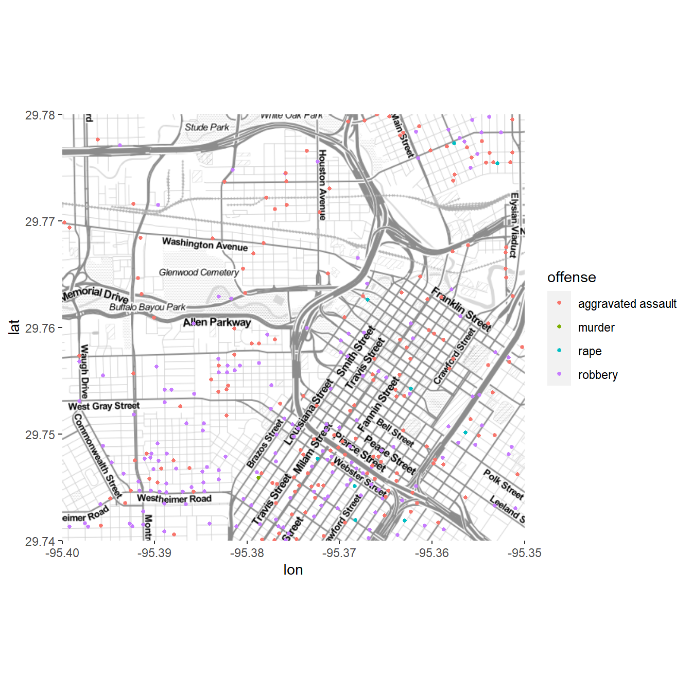
Los mecanismos conocidos de ggplot2, como las facetas, están disponibles en ggmap. Descomponer el anterior gráfico utilizando facet_wrap por tipo de crimen (ver gráfico siguiente). Hacer lo mismo con el día de la semana.
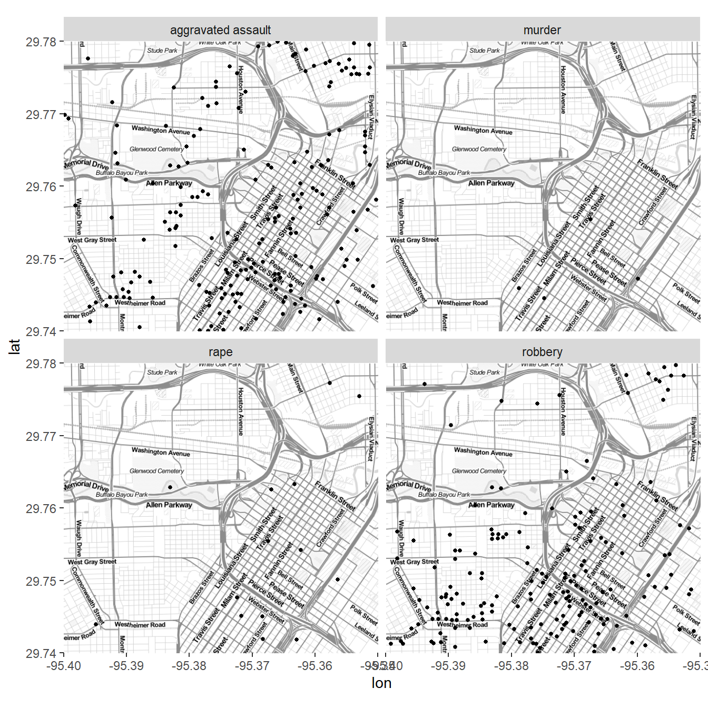
Pintar las gasolineras en el mapa de España (o de una provincia o un municipio) utilizando el fichero data/carburantes.csv. Modificar el tamaño (o color) de los puntos en función de, por ejemplo, el precio de los carburantes.
2.2.2 Más allá de los puntos: densidades y poligonos
Además de geom_point, también están disponibles otros tipos de capas de ggplot2, como stat_bin2d, que cuenta el número de eventos (aquí atracos) que suceden en regiones cuadradas de un tamaño predefinido. Se puede también utilizar stat_density2d, que representa densidades, para identificar las zonas de mayor criminalidad.
HoustonMap +
stat_density2d(aes(x = lon, y = lat, alpha = ..level..),fill="red4",
size = 2, data = subset(crimes.houston,offense=="robbery"),
geom = "polygon")Por otra parte, la información estadística puede ser proporcionada de manera agregada en unidades espaciales (a nivel provincial, municipal, …), como para los datos del paro.
Lo primero que se necesita para representar estar datos, es el conjunto de polígonos (o “shape”) que definen las secciones geográficas. Esta información se puede por ejemplo descargar desde el servidor GADMmediante el paquete raster:
require(raster)
shape <- getData("GADM", country= "Spain", level = 2, type="sf") #mapa administrativo a nivel provincial
peninsula <- subset(shape,!NAME_1=="Islas Canarias") #mapa sin las islas canarias
peninsula ## Simple feature collection with 50 features and 13 fields
## Geometry type: MULTIPOLYGON
## Dimension: XY
## Bounding box: xmin: -9.301806 ymin: 35.17058 xmax: 4.328195 ymax: 43.79153
## Geodetic CRS: WGS 84
## First 10 features:
## GID_0 NAME_0 GID_1 NAME_1 NL_NAME_1 GID_2 NAME_2
## 1 ESP Spain ESP.1_1 Andalucía <NA> ESP.1.1_1 Almería
## 2 ESP Spain ESP.1_1 Andalucía <NA> ESP.1.2_1 Cádiz
## 3 ESP Spain ESP.1_1 Andalucía <NA> ESP.1.3_1 Córdoba
## 4 ESP Spain ESP.1_1 Andalucía <NA> ESP.1.4_1 Granada
## 5 ESP Spain ESP.1_1 Andalucía <NA> ESP.1.5_1 Huelva
## 6 ESP Spain ESP.1_1 Andalucía <NA> ESP.1.6_1 Jaén
## 7 ESP Spain ESP.1_1 Andalucía <NA> ESP.1.7_1 Málaga
## 8 ESP Spain ESP.1_1 Andalucía <NA> ESP.1.8_1 Sevilla
## 27 ESP Spain ESP.2_1 Aragón <NA> ESP.2.1_1 Huesca
## 28 ESP Spain ESP.2_1 Aragón <NA> ESP.2.2_1 Teruel
## VARNAME_2 NL_NAME_2 TYPE_2 ENGTYPE_2 CC_2 HASC_2
## 1 <NA> <NA> Provincia Province 04 ES.AN.AM
## 2 <NA> <NA> Provincia Province 11 ES.AN.CD
## 3 <NA> <NA> Provincia Province 14 ES.AN.CO
## 4 <NA> <NA> Provincia Province 18 ES.AN.GD
## 5 <NA> <NA> Provincia Province 21 ES.AN.HL
## 6 <NA> <NA> Provincia Province 23 ES.AN.JA
## 7 <NA> <NA> Provincia Province 29 ES.AN.MG
## 8 <NA> <NA> Provincia Province 41 ES.AN.SV
## 27 <NA> <NA> Provincia Province 22 ES.AR.HS
## 28 <NA> <NA> Provincia Province 44 ES.AR.TE
## geometry
## 1 MULTIPOLYGON (((-3.030417 3...
## 2 MULTIPOLYGON (((-6.219583 3...
## 3 MULTIPOLYGON (((-5.048538 3...
## 4 MULTIPOLYGON (((-3.35014 36...
## 5 MULTIPOLYGON (((-6.836479 3...
## 6 MULTIPOLYGON (((-3.008117 3...
## 7 MULTIPOLYGON (((-4.000826 3...
## 8 MULTIPOLYGON (((-5.941178 3...
## 27 MULTIPOLYGON (((0.347473 41...
## 28 MULTIPOLYGON (((0.026484 40...Se puede representar este mapa utilizando ggplot2:
ggplot(peninsula) +
geom_sf(aes(fill=NAME_1),alpha=.1,col="grey80",show.legend = FALSE)+
geom_sf_text(aes(label=NAME_2),size=3)+
theme_bw()Ahora pintamos en el mapa los datos del paro (Mujeres, 2011, primer trimestre):
paro=fread("data/paro.csv",encoding="UTF-8")
paro[,id:=sub(" ","0",format(Prov.id,width=2))]
Paro <- subset(paro,Año==2011 & Trimestre=="I")
peninsula$id=peninsula$CC_2
peninsula.paro=merge(peninsula,Paro,by="id") #juntamos las dos bases
ggplot(peninsula.paro) +
geom_sf(aes(fill=Tasa.paro), colour = "grey80", size = .1) +
facet_grid(~ Sexo) +
scale_fill_gradient("Tasa paro",low="aliceblue",high="steelblue4")+
theme_bw()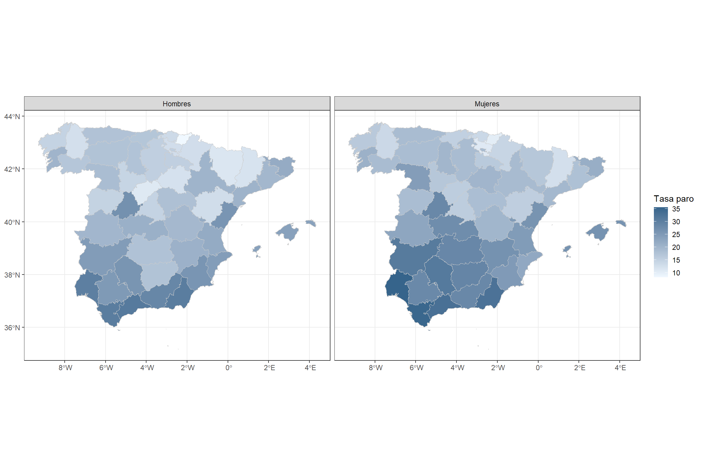
Podemos incluso dibujar este mapa, sobre un lienzo obtenido mediante get_map:
bb=st_bbox(peninsula)
españa <- get_stamenmap(unname(bb),zoom=6,maptype="toner-lite")
mujeres=subset(peninsula.paro,Sexo=="Mujeres")
ggmap(españa) +
geom_sf(data = mujeres, aes(fill=Tasa.paro),alpha=.5,inherit.aes=FALSE) +
scale_fill_distiller(direction=1)+
coord_sf(datum=st_crs(3857)) #No muy alineado!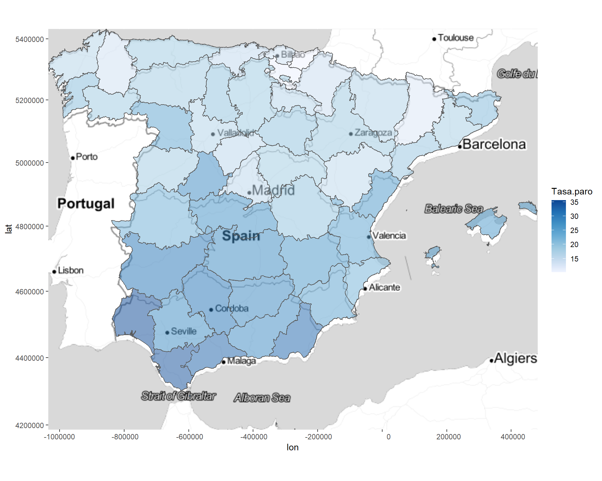
#version dinamica con tmap
#tm_shape(mujeres)+tm_polygons("Tasa.paro")2.3 Árboles filogenéticos
2.3.1 Importación de un árbol
- Un árbol filogenético es un esquema arborescente que muestra las relaciones evolutivas entre varias especies u otras entidades que se cree que tienen una ascendencia común”” (Wikipedia).
El árbol de la vida
El método de construcción de árboles filogenéticos consiste en analizar rasgos heredables (secuencias de ADN) o caracteres morfológicos con el fin de establecer relaciones de parentesco entre especies (o taxones). Casi todos los métodos filogenéticos comienzan con una matriz de distancia en la cual las diferencias entre taxones se estiman sumando discrepancias en nucleótidos o caracteres morfológicos cuantitativos. Cada nodo del árbol representa el ancestro común.
Sin embargo, aquí no entraremos en la construcción de los arboles, sino simplemente en su representación gráfica. Suponemos pues que ya disponemos de un árbol filogenético. El paquete
treeiosirve como interfaz para importar varios arboles en varios formatos (Newick, Nexus, NHX, jplace, ….).
EL siguiente comando permite instalar el paquete ggtreey sus dependencias (incluye el paquete treeio) desde el repositorio de Bioconductor.
devtools::install_github("YuLab-SMU/ggtree")A continuación importamos un árbol sobre filogenia de primates:
require(treeio)
url="https://raw.githubusercontent.com/rgriff23/Dissertation/master/Chapter_2/data/tree.nex"
arbol <- read.nexus(url)
summary(arbol)##
## Phylogenetic tree: arbol
##
## Number of tips: 65
## Number of nodes: 64
## Branch lengths:
## mean: 10.01834
## variance: 67.22004
## distribution summary:
## Min. 1st Qu. Median 3rd Qu. Max.
## 0.401789 4.710731 8.266731 14.271122 51.124065
## No root edge.
## First ten tip labels: Allenopithecus_nigroviridis
## Cercopithecus_mitis
## Cercopithecus_petaurista
## Chlorocebus_sabaeus
## Erythrocebus_patas
## Miopithecus_ogouensis
## Avahi_laniger
## Cheirogaleus_major
## Daubentonia_madagascarensis
## Eulemur_fulvus
## No node labels.2.3.2 Representación básica
Vamos ahora a Explorar la estructura del árbol mediante el comando ggtree
require(ggplot2)
require(ggtree)
ggtree(arbol)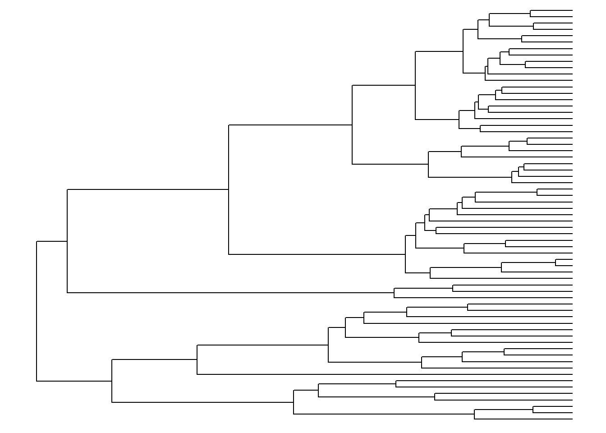
Para poder añadir las etiquetas de los nodos finales utilizamos el comando geom_tiplab:
ggtree(arbol)+geom_tiplab(size=2,offset=.5)+xlim(0,100)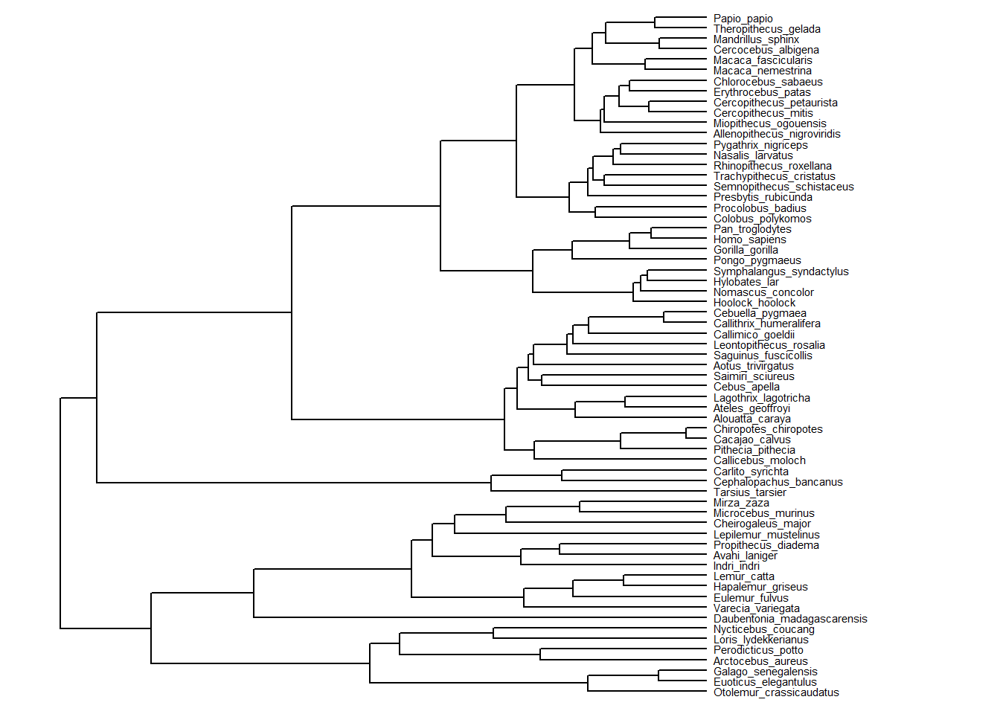
Además de la representación rectangular, otros sistemas de coordenadas (circular, radial, …) son disponibles utilizando la opción layout:
require(ggplot2)
pa <-ggtree(arbol) + ggtitle("rectangular")
pa.bis <- ggtree(arbol) + coord_flip() + ggtitle("rectangular invertido")
pb <- ggtree(arbol, layout="slanted") + ggtitle("slanted")
pc <- ggtree(arbol, layout="circular") + ggtitle("circular")
pd <- ggtree(arbol, layout="radial") + ggtitle("radial")
pe <- ggtree(arbol, layout="unrooted") + ggtitle("unrooted")
multiplot(pa, pa.bis, pb, pc, pd, pe, ncol=3)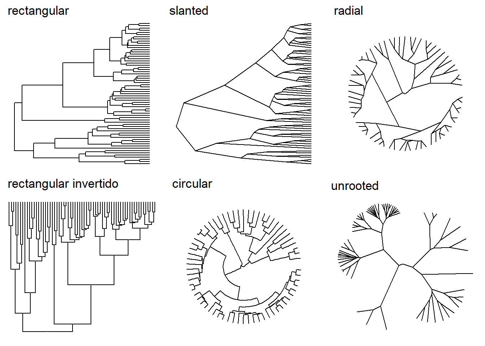
2.3.3 Agrupación de nodos
La función groupClade permite agrupar nodos que comparten un mismo ancestro. A continuación agrupamos los nodos por familia de primates:
- Galagoidea (124)
- Lemuroidea (113)
- Tarsioidea (110)
- Ceboidea (96)
- Hominoidea (89)
- Cercopithecoidea (70)
nodos=c(124, 113, 110, 96, 89, 70)
arbol<-groupClade(arbol,.node=nodos) #agrupación por especie
familias=c("galagoids","lemurs","tarsiers","cebids","hominoids","cercopithecoids")
ggtree(arbol, aes(color=group), layout='circular') +
geom_tiplab(size=2, aes(angle=angle))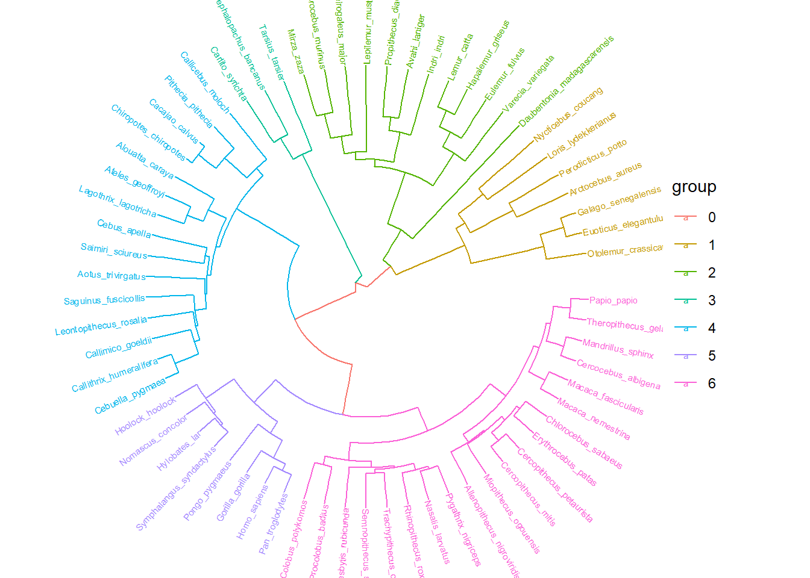
code="ggtree(arbol, aes(color=group)) + geom_tiplab(size=2)"
for(i in 1:6){
mas=paste0("geom_cladelabel(",nodos[i],",'",familias[i],"',offset=25, barsize=2,offset.text=2.5, fontsize=2, hjust=.2)")
code=paste(code,mas,sep="+")
}
eval(parse(text=code))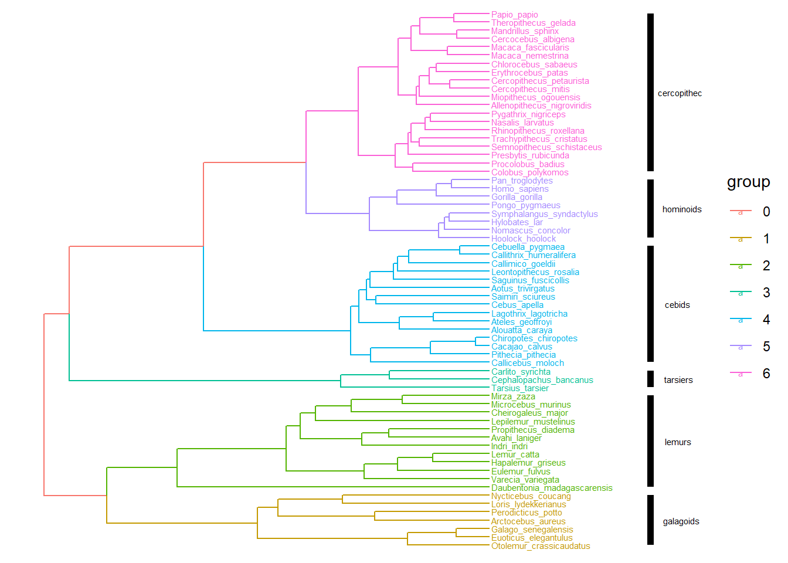
##### Explorar la estructura de los siguientes arboles
arbol<-read.tree("http://www.phytools.org/eqg2015/data/anole.tre") #filogenia de lagartijas
arbol <- read.nexus("https://raw.githubusercontent.com/rgriff23/Dissertation/master/Chapter_2/data/tree.nex") #filogenia de primates2.3.4 Añadir Heatmap
Simulamos cinco caracteres continuos (ejemplo: tamaño del cuerpo, …) de acuerdo al árbol filogenia:
require(phytools)
set.seed(1234) # simulacion reproducible
traits <- data.frame(fastBM(arbol, nsim=5))utilizando las función gheatmap para adjuntar un heatmap a la representación del árbol:
p <- ggtree(arbol) + xlim(0, 100) + geom_tiplab(size=2, offset=17)
# añade el heatmap
gheatmap(p, traits, offset=0.2, width=0.2, low="darkgreen", high="darkred", colnames_position = "top", font.size=2)2.3.5 Visualización de multiple arboles
trees <- lapply(c(10, 20, 40), rtree)
class(trees) <- "multiPhylo"
ggtree(trees) + facet_wrap(~.id, scale="free") + geom_tiplab(size=2) 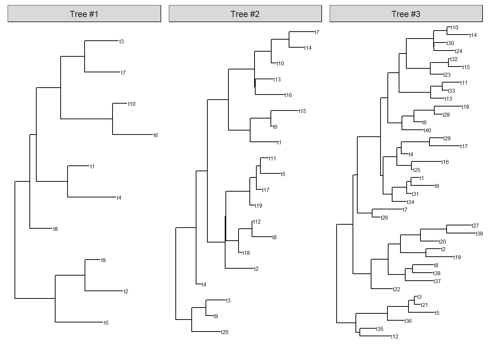